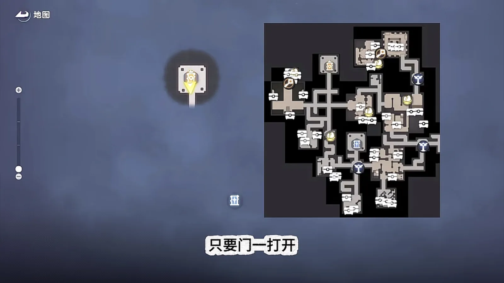
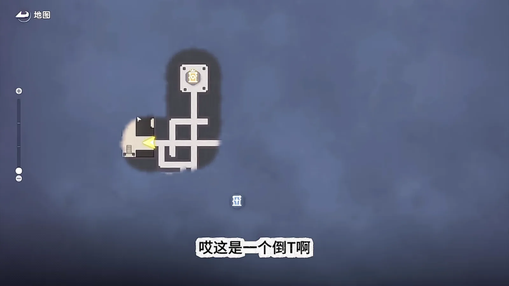
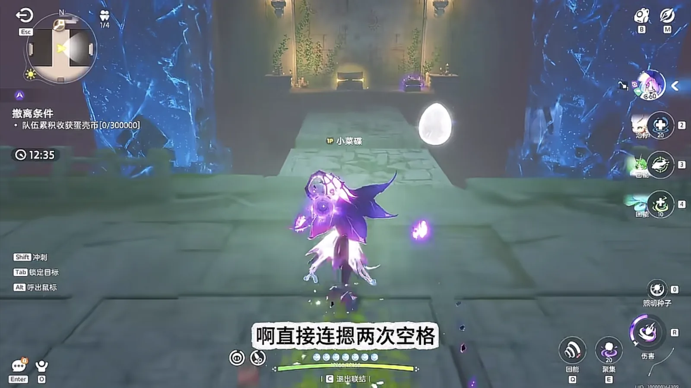
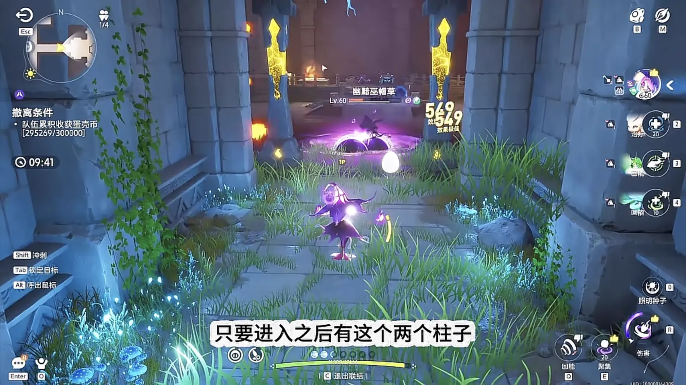
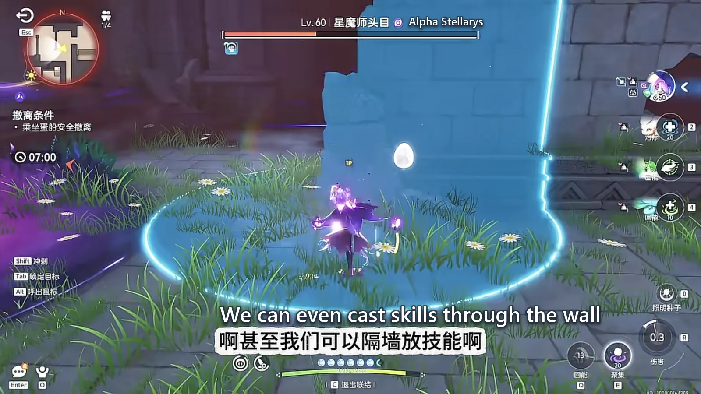
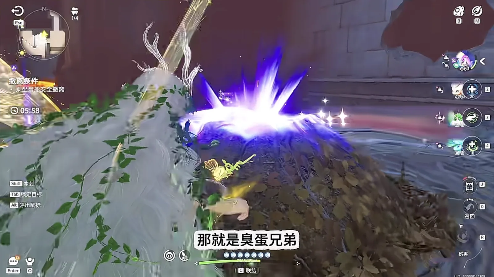
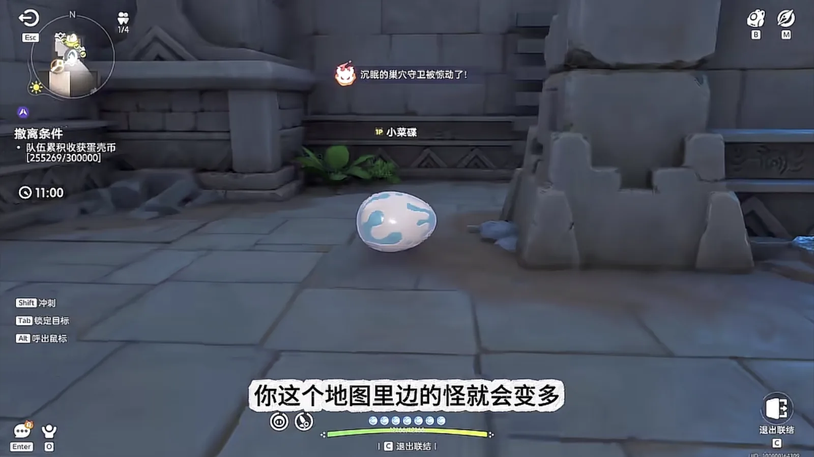
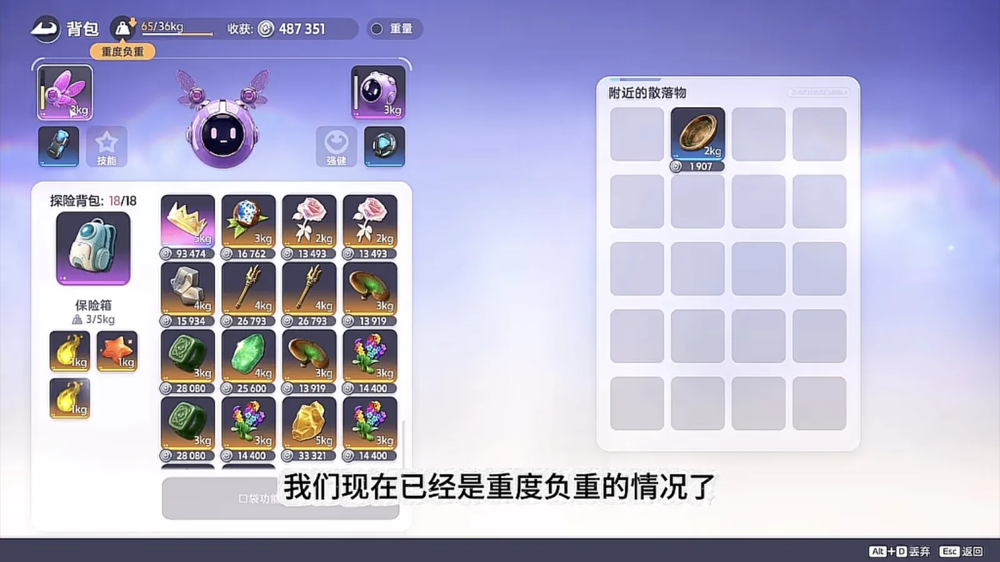
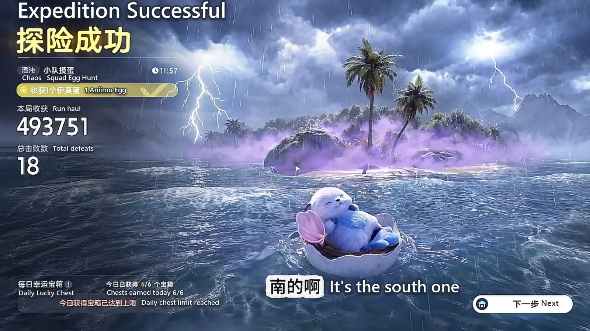

Home首页 / Guides攻略 / Operation: Egg Heist — The South Map, and 300,000 Out of a Solo Chaos Run《伊莫》抢蛋大作战：朝南这张图，单三混沌也能带满三十万
Checked核对于 October 16, 20262026 年 10 月 16 日
Operation: Egg Heist — The South Map, and 300,000 Out of a Solo Chaos Run《伊莫》抢蛋大作战：朝南这张图，单三混沌也能带满三十万
One of the ten Egg Heist maps, walked end to end: the route in through the front door, which crates are worth opening, how to take Stellarys down through a wall, and how to carry 300,000 out while heavily loaded.十张抢蛋大作战地图里朝南的那张，从进门走到撤离：路线怎么认、哪些箱子值得开、星魔师怎么隔墙打，以及重度负重时怎么把三十万带出去。
Of the ten Operation: Egg Heist maps, the one that opens to the south is the richest, the easiest to search and the easiest to leave. It gives you a single passage running south from the outset — in through the front door — and from there the corridors are narrow, the rooms sit close together and the crates come in piles, so one walk through it stacks your haul up to 300,000 without you going out of your way. With a Witchin (Dark · Grass · Regen) party on a solo-queued three-player Chaos run, five minutes is enough to walk out with a full 300,000: with luck you carry an egg out on top of that, and without luck the 300,000 still clears the extraction requirement comfortably. Here is that route, from the top.抢蛋大作战十张图里，朝南的这张最肥、最好搜，也最好撤。它开局只有一条向南的通道，从正门进去，路窄房密、箱子扎堆，一路走下来顺手就能把物资堆到三十万。配上巫帽草（Witchin，暗 · 草 · 回能）这套阵容打单三混沌，五分钟之内带满三十万撤离是做得到的：运气好再捎一个蛋走，运气一般，三十万的撤离条件你也稳够。下面把这条搜法从头走一遍。
Reading the map: one road south, in through the front door认图：朝南一条道，从正门进
When the doors open, go in through the front. There is only one thing you need to know about this map: it has a single passage running south — north at the top, south at the bottom — and that southern road is the main line. Light this map up and it is bright enough that the whole layout reads at a glance.开局只要门一开，就从正门进。认这张图只看一点 —— 整张图只有一条向南的通道，上北下南，南向这条道就是主路。这张图点亮之后特别亮，格局一目了然。

The route: right at the second junction搜法：两个路口都往右拐
There are two junctions ahead of you and the turn you want is the second one, to the right. Walk past the first junction, then take the next one right — through that turn is the T-shaped room. Straight ahead of you, right where the cursor is pointing, an egg spawns sometimes.前头两个路口，都在第二个路口往右拐。走过头一个路口，再在下一个路口向右拐，往右拐过去就是T字房。正前方、鼠标那个位置上，有时候会直接刷一个蛋。
What is a T-shaped room? Cast something and look at the map: if the room draws as an upside-down T, that is a T-shaped room. Standing on that spot would normally drop you through, but on this route you will not fall; if you would rather not gamble, tap space twice to fly up, and come back down into the same room to search it.什么叫T字房？先放一个技能，看地图上它是个倒 T，这就叫T字房。站在那个位置本来会掉下去，但照这条路走过去基本掉不下去；实在怕，连按两次空格飞起来，飞上去再落下来搜也是一样的。
This room is easy to search, it comes with a key room attached, and above all it is exceptionally rich.这间房又好搜，又带钥匙房，关键是特别肥。

Clear the mobs first, then open the key room清怪再开钥匙房
Once you are inside the T-shaped room, clear every mob before you go near the key room, and the reason is a practical one: mob damage breaks the floor plates. Walking over them normally will not break them — they only go when you stand still, or when you take a hit. So do not stand about, and do not leave the mobs alive.T字房里进了房，一定先把怪清干净再去开钥匙房，原因很实在：怪的伤害会把石板打碎。石板你正常走不会碎，只有你停下来不动、或者挨了打，它才碎。所以别站桩，也别把怪留着。
With them held, push in, kill the Budsquire (Grass · DPS), then let your energy come back a little — this is the key room.吸住之后往里走，把小哭苞（Budsquire，草 · 输出）打死，再把能量缓一缓，这里就是钥匙房。
Eat every gold crate, ignore single purple slots金箱子全吃，紫单格不看
Pick crates by this rule: a single-slot purple crate is not worth a look, its drop rate is low, so clear the room and go straight to the key room. Everything inside a gold crate is worth taking — it drops resources, and it drops keys, gold key or silver key either way, 70,000 a slot or 35,000 a slot, all of it is money. A gold crate is the floor of the table and Chaos difficulty always gives you one gold; if it rolls rainbow, that is down to luck.箱子按这个规矩挑：紫色单格箱子不看，出货概率低，清完直接开钥匙房就行。金箱子里面的东西全部都要吃 —— 它会掉资源，也会掉钥匙，开出来是金钥匙还是银钥匙都算，单格七万、三万五，都是钱。金色箱子本身就是保底，混沌难度必出一个金；要是开出彩，那就是运气的事了。
The corner normally rolls a purple crate. If that corner is not even gold, it is a blue crate; if the corner is purple, this run is a poor one. A poor run is no reason to panic — dig one egg and head up and out. Whether to dig the egg at all is up to you: dig it out and the whole map gains mobs.拐角那一块正常概率会刷一个紫箱子。要是这块连金色都不是，那就是蓝箱子；反过来这块是紫箱子，这一局基本就是个穷局。穷局也不用慌，挖一个蛋往上走就行，蛋挖不挖随你，挖出来整张图的怪会变多。

Two pillars at a doorway: throw a ball in first进门见两根柱子，先放一颗球
One rule to remember: any doorway framed by two pillars, like this one, gets a ball thrown through it before you walk in — one cast of Witchin's skill. That cast is what keeps you from being caught out as you go through. Doorways like this are often an ambush from both sides; the only thing to do is not get caught. To the left of the egg a Sparki (Fire · Regen) spawns sometimes — the one that runs up and blows itself apart — so keep half an eye out. The corner room, this room, is gold crates and rainbow crates almost every time, so search it properly.记住一条：只要进门看到这种两根柱子夹出来的门口，一定要放一颗球，也就是放一发巫帽草的技能。这个技能能保证你过这道门的时候至少不会被阴到。这种门口常是双鬼拍门，别被阴住就行。蛋左边有时候会刷一只幽幽焰（Sparki，火 · 回能），也就是自爆卡车，留个心眼。拐角房、这个屋绝大多数时候是金箱子和彩箱子，要认真搜一遍。

Stellarys: clear the adds first, then fight it through the wall星魔师：先清小怪，再隔着墙打
Carry on from here — if you are already full, or if you came purely to climb the ranks, there is nothing further you need to do, because Stellarys (Dark · DPS) may spawn up there. If you are on a solo-queued three-player Chaos run and you want this boss, this is the way to it. Clear the mobs on the road as you come; it has a chance to spawn here.往前再走，不是吃饱了、或者你纯粹为上分来的，就不用动了 —— 前面有概率刷星魔师（Stellarys，暗 · 输出）。你要是单三混沌想打这个boss，就从这块过去。路上顺手把怪刷一下，到这儿有概率刷星魔师 boss。
Before you take Stellarys on, clear every add around it, so that nothing interferes while you fight. When you get there, hug a wall and fight it through that wall — the wall eats most of the damage for you, and you can even cast through it. Its hardest hit is the five orbs gathered into one, so watch your own health. When it dies it drops 星皮管: take that straight away and bank it in the safe box, trim off what you do not need, and go back to digging eggs.打星魔师之前，先把周围的小怪全清掉，保证打的时候周围没有干扰。到了就跟它卡住一根墙，隔着墙打 —— 这堵墙会帮你挡掉绝大多数伤害，甚至可以隔着墙放技能。它最疼的一手是五个球合在一起，盯住自己的血。打完掉星皮管，直接把星皮管拿到手塞进保险箱，没用的东西剪掉，再回头挖蛋。

How to tell a rotten egg臭蛋怎么认
While you are digging, hold F and watch the glow: if it is still purple with the bar nearly full, that is a rotten egg. A rotten egg is one that stays purple all the way to full. Dig it or leave it, either is fine — dig it out and this map gains mobs, and spawns appear outside as well.挖蛋的时候，连续按 F，进度快满的时候它还是紫光，那就是臭蛋。臭蛋就是挖到满也还是紫光的那一枚，挖不挖都随你；挖出来的话，这张图里的怪会变多，外面也会刷怪。
While we are here, how to search this room: if it spawns a Grizbo (Rock · DPS), this corner holds a purple crate — that bear does not follow you around, unlike the bears that normally hang off your tail. Climbing the ranks does not raise your drop rates.顺便讲一下这个房间怎么搜：房里如果刷一只暴睡熊（Grizbo，土 · 输出），这块会有一个紫箱子 —— 这只熊不跟着你跑，跟平时那种吊在屁股后面的熊不一样。段位的提升不会提高你出货的概率。
If the room spawns a Grizbo, jump twice to fly up and work along the edge — along the edge and up — and two Thornblade (Grass · DPS) will spawn. Thornblade hits hard, do not underestimate it; killing them pays a gold crate plus a purple, or one gold and two purples, or one gold and one purple, or three purples, depending on how fat the run is.要是房里刷的是一只暴睡熊，就连跳两次飞起来，沿着边走、沿着边上来，会刷两只刺剑玫（Thornblade，草 · 输出）。刺剑玫伤害不低，别小看，打完给一个金箱子加一个紫箱子，或者一金两紫、一金一紫、三紫，全看当局肥不肥。

Getting out: Twine an egg when you are heavily loaded撤：重度负重就和蛋联结
Search this far and the haul is about full, so it is time to think about leaving. When you are heavily loaded, take one of those eggs you walked past and Twine to it — while you are twined, weight does not affect you. Dig it out, and from there it is a rolling run for the exit. Bring Witchin back out: when the fight comes, hit first — even if the Twine is broken, hit first, then Twine again and clear the field with the ultimate.搜到这儿，资源差不多吃满了，就可以准备撤。重度负重的时候，找刚才那些蛋里的一枚，跟它联结 —— 联结状态下不受负重影响。把蛋挖出来，接下来就是滚蛋的路。来巫帽草，打完之后先打，哪怕联结被破了也先打，连上用大招清场。

Do not spend your dodge on the way. The egg's dash is one every fifteen seconds, so use it sparingly: save it for when the mobs come in numbers — a mantis, a sheep, Pawney (Dark · DPS) all at once, catching you out — that is when to spend it. On a solo-queued three-player Chaos run what you are here for is materials and the season's collection, not the egg, and with rotten eggs all over the map there is no sense in hauling one the hard way.运的途中不要用闪避。蛋的冲刺十五秒一下，这一冲要省着用：留到怪多的时候 —— 螳螂、绵羊、盔勇士（Pawney，暗 · 输出）一拥而上、阴你的时候，再用它。单三混沌这一局以物资和赛季珍藏为主，别以蛋为主，何况满地都是臭蛋，更不用费劲运了。


The order to do it in按这个顺序走
- Go in and read the southern passage first, then follow the main road.进门先认南向那条通道，顺着主路走。
- Take the second junction to the right and go into the T-shaped room.两个路口都在第二个往右拐，进T字房。
- Clear the mobs in the room before you open the key room.进房先清怪，再开钥匙房。
- Take every gold crate; single purple slots are not worth a look.金箱子全吃，紫色单格不看。
- Search the corner room properly.拐角房认真搜一遍。
- At a doorway framed by two pillars, throw a ball through it first.路过两根柱子的门，进门先放一颗球。
- If you want the boss, take this road up and fight Stellarys through the wall.想打 boss 就从这条路过去，隔墙打星魔师。
- When the haul is full, Twine an egg and roll out.物资堆满了，找一枚蛋联结、滚蛋撤退。
The order is this one because every step clears the way for the next: clear the mobs and only then dare to open crates, get full before deciding whether to take the boss, let the Twine carry the weight on the way out, and keep the dash for the last wave of mobs.排成这个顺序，是因为每一步都在给下一步让路 —— 先清怪才敢开箱，先吃饱再决定要不要打 boss，撤的时候靠联结免掉负重，冲刺留到最后一波怪潮上。
More guides相关攻略
- Prismana, Sparkling, Umbral and the Shiny Star: Aniimo's Four Rare Terms, Explained《伊莫》四个词条：虹光、闪耀、幽黯、闪亮之星都是什么意思 — The two appearances and the one rating that decide whether an Aniimo counts as finished: which of them is limited, which is luck, which is nearly free, and the threshold that actually stops people.想让一只伊莫算得上毕业，标准是「双外观加一个闪亮之星」。这四个词条各管一段：哪个限量、哪个靠运气、哪个几乎白送，以及真正卡住大多数人的那道门槛。
- Aniimo Tier List: The 19 Creatures to Build First《伊莫》强度巅峰榜：几百小时之后，新手先练这 19 只 — A personal tier list of 19 Aniimo, grouped by the job each one does — damage, break, healing and support, energy regen — with every element and role checked against the official wiki and the ranking left as my own.一份个人向的强度榜单，按输出、击破、治疗辅助、回能分成四组。每只都逐一对过官方维基的属性与定位，哪一段是能查的、哪一段是我自己的判断，文中分开写。